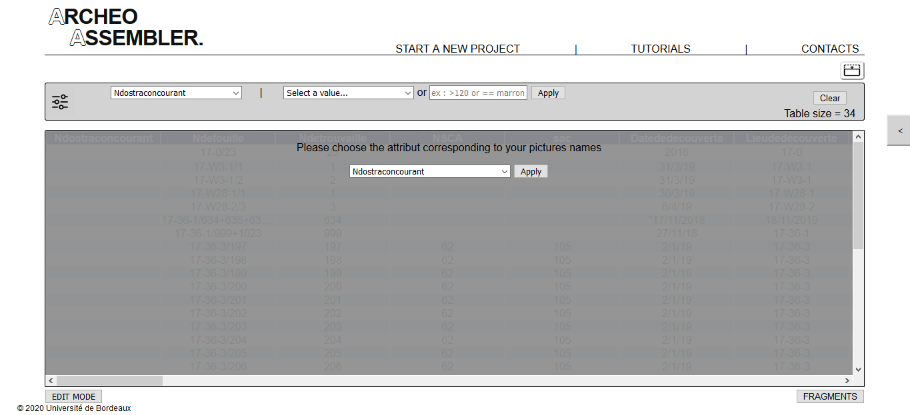

Example of workflow
1. Data loading
At a first time, click on the loading button to load your data file.
You can then choose in the displayed list the parameter for identifying fragment images.

To load your images, please first place your directory in the "Data" folder.
Then click on the PICTURES button to visualize the picture's place.
As for the data, load your picture's folder.
2. Filtering

To filter the table's data, first select in the first list the attribute on which you want to apply a filter.
Then you can choose a value from the second drop-down list, or apply a logical operator to the input field.
Click on APPLY to visualize the new table
3. Data editing

To activate the "Edit mode", click on EDIT MODE. The page will become greyer and buttons will appear.
- Two additions modes are available, first by loading a new data file thanks to the uploading button. Or with the ADD DATA button to manually add each parameter of a fragment
- You can delete a line from the table by clicking on REMOVE DATA. The button will appear red to indicate that the deletion function is on. Then click on a line to make it disappear.
- To simply edit a line, click on EDIT DATA. A page will allow you to change the parameters of a fragment.
4. Data selection

Outside of the "Edition mode" and after loading your data and images, you can click on a line to add the fragment to your selection. You can visualize it in the Selection insert at the right of the screen.
To remove a fragment from your selection, simply click on the X button in the Selection insert.